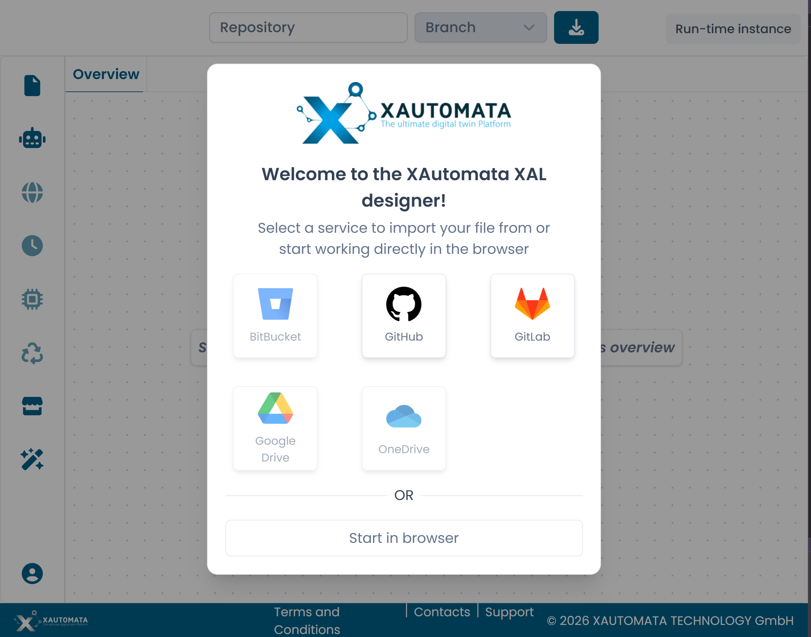
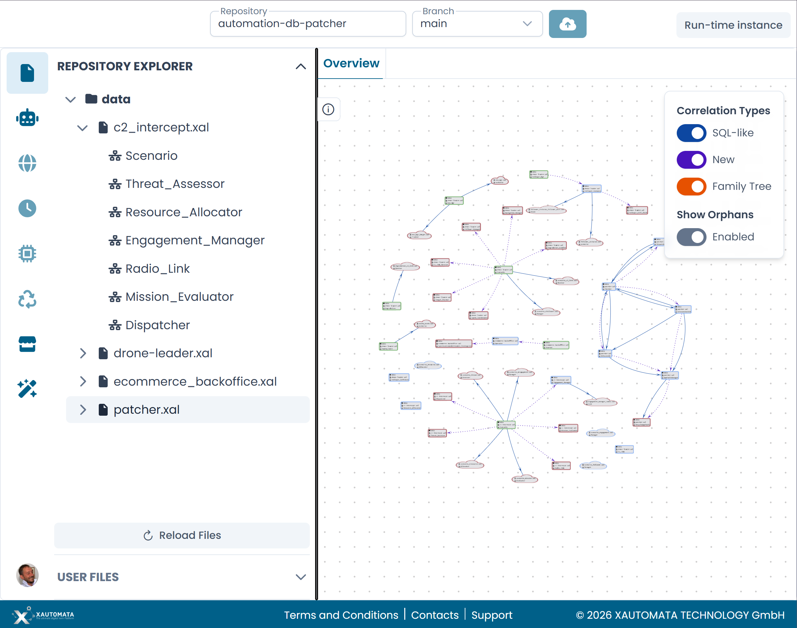

Opening a File
When you open the XAL Designer, a welcome dialog lets you choose how to load your XAL files.

Fig.1 - The welcome dialog
Connecting to a repository
Select one of the available version control providers: GitHub, GitLab, or Bitbucket.
After authenticating, use the Repository and Branch fields in the top bar to select the repository and branch you want to work with. The designer loads the file tree automatically.
Once connected, the Repository Explorer in the left sidebar shows the folder and file structure of the selected branch. XAL files are listed under their respective directories and can be expanded to show the automata they contain.
To open an automaton, click its name in the repository explorer. It opens as a new tab on the canvas.

Fig.2 - The Repository Explorer with a loaded repository
Working in the browser
Select Start in browser to work without connecting to a version control system. Use the upload button in the top bar to load a local .xal file from your computer.
Warning
Changes made in browser mode cannot be committed to a repository. Make sure to export or save your work manually before closing the session.
Note
A known issue affects the upload button in browser mode. See qa.md — Q7 for details.
Switching repositories
To switch to a different repository or branch, update the Repository and Branch fields in the top bar at any time. The designer reloads the file tree accordingly.